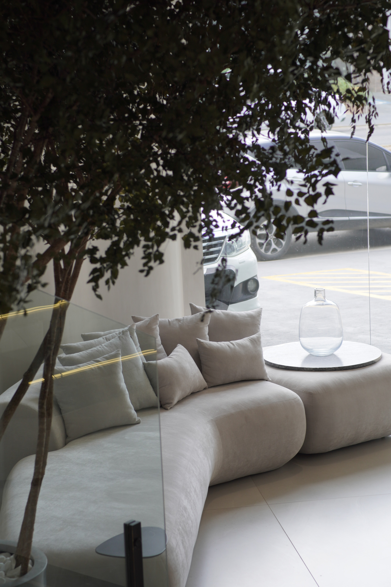
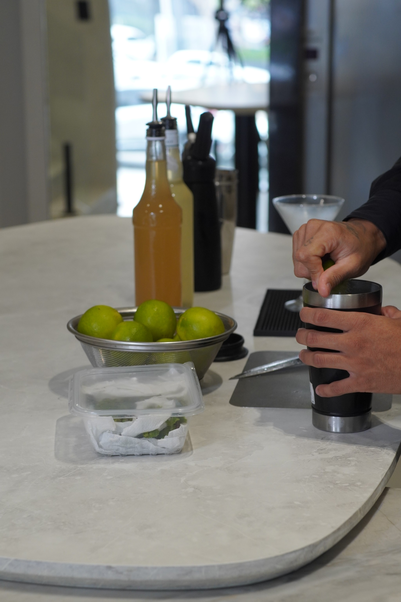
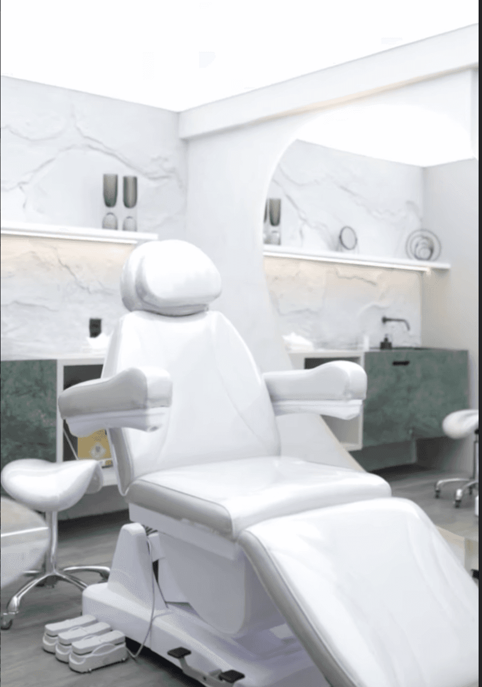

Plano alimentar individual para emagrecer com saúde, ter mais energia e potencializar seus tratamentos estéticos. Sem dieta genérica.
A nutrição na Clínica Velar une saúde e estética: um plano alimentar individual que apoia o emagrecimento, dá mais energia e potencializa os resultados dos tratamentos estéticos. Em vez de dietas prontas e restritivas, o foco é a reeducação alimentar sustentável, ajustada à sua rotina, com acompanhamento contínuo em Caruaru.
Resultado estético duradouro não vem só de procedimento — vem também do que acontece por dentro. A nutrição cuida da alimentação para favorecer o emagrecimento, a firmeza da pele, a disposição e a manutenção dos tratamentos corporais. Aqui não existe dieta pronta: existe um plano feito para a sua rotina e os seus objetivos.
Investigação profunda de hábitos, histórico, metabolismo e objetivos individuais.
Montagem de plano alimentar personalizado, com alimentos acessíveis e práticos.
Reavaliações periódicas para adequar quantidades e receitas à evolução do seu corpo.
Suporte contínuo para estabilizar o peso ideal e consolidar a reeducação definitiva.
Estar num complexo estético multidisciplinar como a Clínica Velar significa que a sua nutrição conversa diretamente com a sua estética corporal. Trabalhamos de forma integrada, unindo tecnologia estética ao equilíbrio metabólico interno, sob um mesmo teto e com a mesma dedicação premium.

Recepção
Lounge
ConsultóriosEspera-se um emagrecimento gradual, saudável e sustentável, além do visível aumento de disposição física e imunidade. Resultados de tônus corporal são amplificados. *Resultados variam de pessoa para pessoa.*
A Clínica Velar opta por não expor fotos de antes e depois corporais focadas em peso para respeitar a ética da saúde nutricional e a individualidade metabólica. Focamos em dados reais de composição corporal validados em bioimpedância durante as consultas.
Nutricionista Clínico & Esportivo
Responsável pela área de Nutrição na clínica, desenvolvendo planejamentos inteligentes que geram sustentabilidade física, estética e performance de forma integrada.
Sim. A alimentação adequada fornece os substratos para síntese de colágeno local, otimiza a perda de gordura profunda e reduz o inchaço e a retenção hídrica, maximizando aparelhos de estética corporal.
Não. Defendemos uma reeducação alimentar viável e duradoura. O plano alimentar é montado em conjunto com o paciente para que contenha alimentos reais e prazerosos, adaptando-se perfeitamente à sua rotina profissional e familiar.
Não. Nosso setor de nutrição funciona de forma totalmente independente e atende qualquer paciente que busque reeducação alimentar, saúde e emagrecimento, mesmo que não realize procedimentos estéticos.
Melhorias de disposição, digestão e redução de retenção de líquidos costumam surgir logo nas primeiras duas semanas. Mudanças de composição corporal e peso são graduais e acompanhadas a cada retorno.
Sim, todas as consultas de acompanhamento nutricional são realizadas de forma presencial em nosso complexo clínico na Clínica Velar, em Caruaru/PE.
Agende a sua consulta nutricional personalizada com Dr. Felipe Neri.